When C. V. L. Charlier excavated the foundations in 1901 they did not match the printed plans; Charles Christensen’s reconstruction (1921) follows the excavated measurements. Below, each subject is shown through the competing contemporary images and Christensen’s reconstruction. Click any image to enlarge.
Every printed view of Uraniborg goes back, through a short chain of copies, to images Tycho himself issued; each copy coarsened the last. Measured against the foundations Charlier excavated, none is reliable in architectural detail; Christensen’s reconstruction is the correction.
The grades. Each image carries the house grade A–D as a record of the building, after Francis Beckett’s source criticism in the same volume, with the page where he judges it.
- Athe measured reconstruction, drawn on the foundations Charlier excavated in 1901Beckett & Christensen 1921, Tavle 1–9
- BTycho’s own woodcuts with details found nowhere else — the Marburg sheet of 1586 and his Stjerneborg ground-planBeckett & Christensen 1921, pp. 8, 25
- Chis later engravings and his Hven map, cleaner than their models and poorer in detail (Epistolae 1596, Mechanica 1598)Beckett & Christensen 1921, pp. 8–10, 25
- Dthe derivative line — the Vienna drawing and Braun & Hogenberg, “useful only as cautionary examples”Beckett & Christensen 1921, pp. 7–8
The east front
The principal façade, shown four ways. The Marburg woodcut is the most faithful; the Epistolae engraving prettifies it (and first adds the swept octagonal portal-cupola); the Mechanica re-cuts it again, dropping detail; Christensen's measured elevation, built on the excavated footprint, is the corrective.
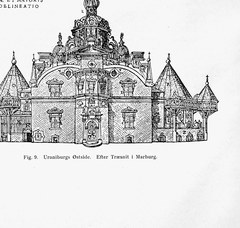
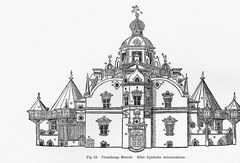
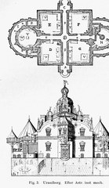

The ground plan
The plan the contemporary prints give is wrong even in its main outlines — the south ambulatory was wider, the portal-projections square not rectangular. Christensen's plan follows the excavated foundations.
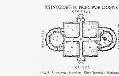

The whole establishment, from above
The bird's-eye views record how the gardens and ramparts changed over time — but they coarsen and distort the architecture. The Vienna drawing and Braunius descend from a lost 1585 woodcut; the Marburg and Epistolae cuts are Tycho's own successive versions.
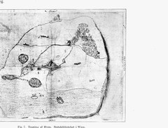
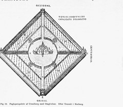
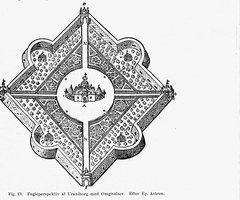

The plan as Beckett and Christensen read it. One figure governs the whole establishment: the square and the circle (Uraniborg og Stjærneborg, section III, pp. 6–7). Round the house, centred on the midpoint of its square, lay the open circular courtyard; round that Tycho threw up ramparts forming a square whose corners point to the four compass points, with the two gate-houses in the east and west corners and, in the north and south, the servants’ house and the printing house as reduced repetitions of the main building. The diagonals of that square run in the four broad walks from the corner buildings to the courtyard; prolonged, they meet the midpoints of Uraniborg’s four façades at right angles, continue in its four corridors and cross at its centre, and the same walks cut the gardens between courtyard and rampart into four equal quarters. The house’s own diagonals, prolonged, become the axes of the four gardens and strike the centres of the semicircular rampart projections, each with a summer-house at its centre; the inner semicircles, continued, touch the midpoints of the fences between the gardens. The whole, in Beckett’s words, is held together by “axes, diagonals, radii and diameters”. Christensen’s schematic plan of this geometry is the book’s Fig. 6; the measured site plan is Tavle 1, above.
The island of Hven
The island itself: Braun & Hogenberg printed it from the derivative tradition; the Epistolae map goes back to a drawing by Willem Blaeu, then Tycho's young pupil. Christensen's measured reconstruction covers the establishment, not the island.
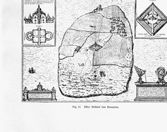
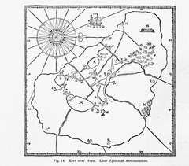
Stjerneborg, the sunken observatory
Tycho printed only a plan and a single perspective of the star-castle; the rest is reconstruction. Christensen recovered its elevations and sections, and the painted warming-room beneath the turf.
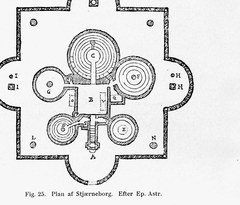
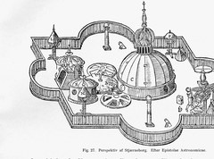